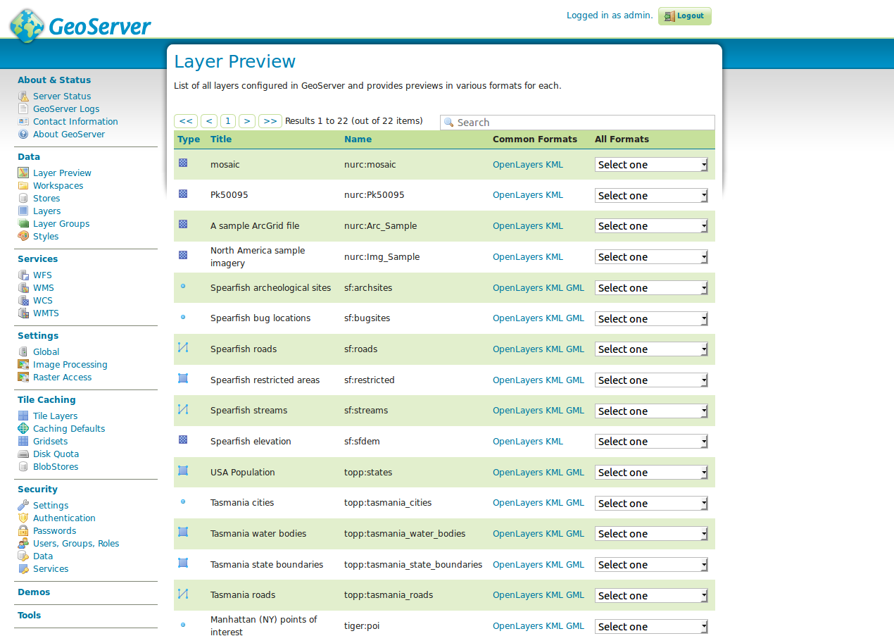
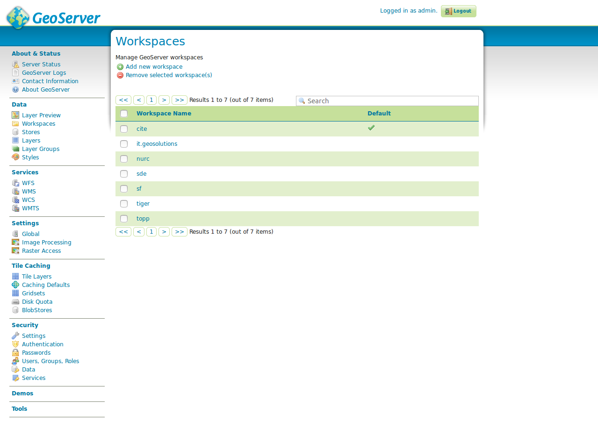
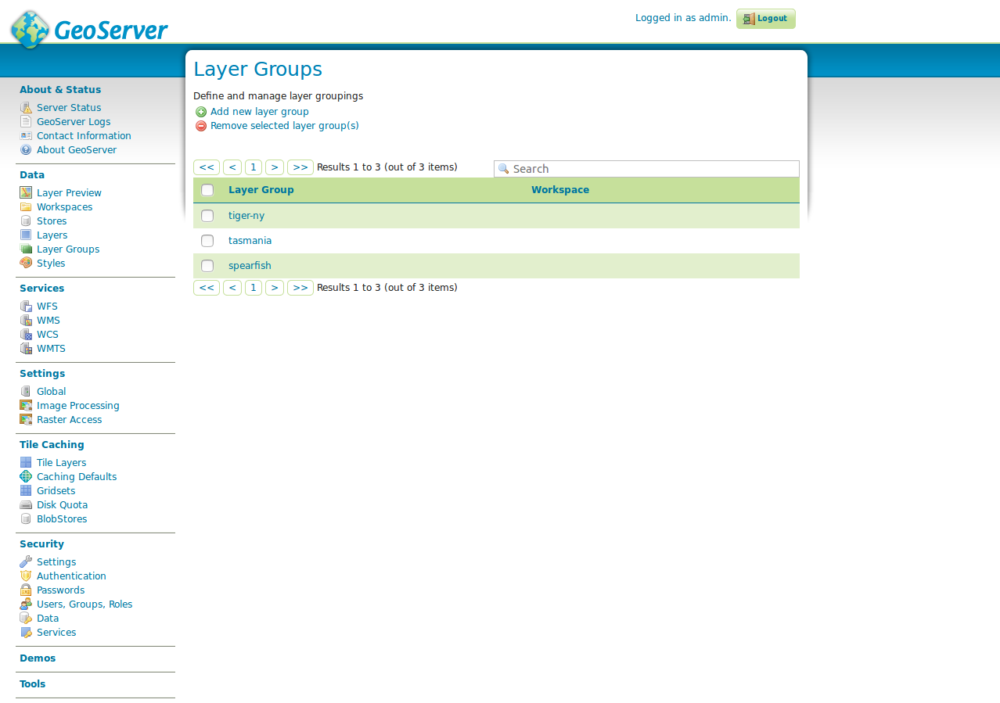

Daten
Die folgenden Abschnitte beschreiben den umfangreichsten Konfigurationsbereich des GeoServers, die Schritte zur Veröffentlichung eines Dienstes.
Layervorschau

Die Layer-Vorschau bietet eine Übersicht aller über diesen GeoServer veröffentlichten
Layer. Damit ein Layer in dieser Übersicht erscheint (und auch im GetCapabilities
Dokument der Instanz erscheint), muss der Layer als Veröffentlicht gekennzeichnet sein.
Jeder Layer verfügt über eine Angabe des Typs (s. nachfolgende Tabelle), einen internen Layernamen
(inklusive Name des Arbeitsbereichs), einen Layertitel (Kurzbeschreibung) und eine
Auswahlbox von möglichen Vorschauformaten.
| Typ | Beschreibung |
|---|---|
 |
Vektorlayer (Typ unbekannt) |
| Vektorlayer ((Multi-)Punkt) | |
| Vektorlayer ((Multi-)Linie) | |
| Vektorlayer ((Multi-)Polygon) | |
 |
Rasterlayer |
| Gruppenlayer | |
 |
Kaskadierter WMS |
Die Layerliste kann per Linksklick auf die Spaltennamen Typ, Name
oder Titel auf- und absteigend sortiert werden. Neben einer Übersicht aller
verfügbaren Layer, kann eine Vorschau eines Layers in verschiedenen Formaten
vorgenommen werden. Dies empfiehlt sich insbesondere für eine schnelle und
komfortable Überprüfung eines neu angelegten Layers. Der schnellste Weg zu einer
Vorschau ist das „Format“ OpenLayers, wodurch ein neues Fenster mit einer
Vorschaukarte des ausgewählten Layers geöffnet wird.

Die OpenLayers Map erlaubt eine freie Navigation innerhalb des Layers und eine GetFeatureInfo-Abfrage durch einen Linksklick in den Layer. Über den Button toggle options toolbar oberhalb des Navigationskreuzes kann eine Werkzeugleiste eingeblendet werden, die Optionen zur Manipulation des GetMap-Aufrufs ermöglicht (Bildformat und -größe, Antialiasing etc.). Unter der Auswahlbox Alle Formate sind weitere Formate aufgelistet, die nach WMS und WFS gegliedert sind. Für die Vorschau eines WMS wird dabei jedoch das obige Format „OpenLayers“, für die Vorschau eines WFS das Format „GML2“ empfohlen.
ℹ️ Information
Über die Auswahlbox ist auch der Export als Shapefile möglich, das in jedes gängige Desktop GIS zur Weiterverarbeitung eingebunden werden kann.
Aufgabe:
- Rufen Sie die OpenLayers Layervorschau eines beliebigen Layers auf (sofern vorhanden) und ändern Sie die
Requestparamter
TilingundFormatzu einem Parameter Ihrer Wahl. Rufen Sie anschließend die GetFeatureInfo ab.
Arbeitsbereiche
Über den Menüeintrag Arbeitsbereiche kann die Übersicht aller verfügbaren Arbeitsbereiche des GeoServers aufgerufen werden. Über die GUI können neue Arbeitsbereiche erstellt oder bestehende editiert werden.

Der GeoServer legt Layer über folgende Hierarchie ab:
Arbeitsbereich
└ Datenspeicher
└ Layer
└ Gruppenlayer
└ Stile
Zentrales Element ist der sog. Arbeitsbereich, der zunächst als Sammelobjekt für Layer verstanden werden kann. Analog zu einem Namensbereich organisiert der Arbeitsbereich Objekte eines gemeinsamen Themas, z.B. die Layer einer bestimmten Abteilung oder eines bestimmten Themas. Jedem Arbeitsbereich können nun weitere Konfigurationselemente zugeordnet werden. Hierzu zählen u.a. der Datenspeicher, die (Gruppen-) Layer, Stile und übergeordnete Einstellungen des GeoServers wie Kontaktdaten oder globale WMS-Einstellungen.
Wichtig: Wird ein GeoServer initial in Betrieb genommen, muss die oben skizzierte Reihenfolge beim Anlegen eines Layers genauestens beachtet werden, d.h. zunächst wird ein Arbeitsbereich, danach ein Datenspeicher und anschließend ein Layer (inklusive Stil) angelegt.
ℹ️ Information
Der GeoServer besitzt im Auslieferungszustand mehrere Beispiel-Arbeitsbereiche (cite, it.geosolutions, nurc, sde, sf, tiger, topp). Diese können im Produktivbetrieb ohne Bedenken gelöscht werden.
Aufgabe:
- Legen Sie einen neuen Arbeitsbereich mit dem Namen
FOSSGISan. Als Namespace URI geben Siehttp://geoserver.org/fossgisein. Markieren Sie diesen Arbeitsbereich als Standardarbeitsbereich.
Datenspeicher

Der Datenspeicher ist eine Referenz zu einer Datenquelle, die Vektor- oder Rasterdaten zur Veröffentlichung enthält. Jeder Datenspeicher wird dabei genau einem Arbeitsbereich zugeordnet. Ein Datenspeicher beinhaltet dabei z.B. Verbindungsparameter zu einer Datenbank oder den Pfad zu einem Shapefile. Die obige Abbildung zeigt die Übersicht aller verfügbaren Datenspeicher, die über das Feld Datenspeicher im linken Navigationsmenü aufgerufen werden kann. Die Übersicht besteht aus den Spalten Datentyp, Arbeitsbereich, Name für Datenspeicher, Typ und Aktiv. Der Datentyp beschreibt den Typ des Datenspeichers, wobei es sich um einen der in nachfolgenden Tabelle aufgelisteten Datentypen handeln kann. Arbeitsbereich beinhaltet den übergeordneten Namen des Arbeitsbereichs, Name für Datenspeicher den Namen des Datenspeichers, Typ den konkreten Speichertyp (z.B. die Datenbank) und Aktiv den Status des Datenspeichers.
| Typ | Beschreibung |
|---|---|
| Einzeldatei/Verzeichnis (Vektordaten) | |
| Einzeldatei/Verzeichnis (Rasterdaten) | |
| Datenbank (Vektordaten) | |
| WMS | |
 |
WFS |
Über das Formular kann sowohl einer neuer Datenspeicher angelegt werden als auch ein bestehender Datenspeicher editiert werden.
Layer

Layer sind die Repräsentationen von Geodaten (Vektor- oder Raster). Jeder Layer enthält dabei mehrere Kartenelemente (Features), die als gerenderte Rasterdaten (WMS) oder als Rohdaten (WFS bzw. WCS) abgerufen werden können. Jedem Layer ist im GeoServer gemein, dass sie genau einem Arbeitsbereich und genau einem Datenspeicher zugehörig sind.
ℹ️ Information
Der GeoServer legt automatisch für jeden Layer einen WMS und WFS bzw. WCS an. Nach Erstellung kann ein Servicetyp auf Layer- oder Arbeitsbereichsebene deaktiviert werden.
Die Übersicht besitzt Spalten zur Angabe des jeweiligen Typs, dem Namen des Arbeitsbereichs, Datenspeichers sowie des Layers (Name), Status (Aktiv) und Koordinatenreferenzsystem im EPSG Code. Wie bei den anderen Listentypen auch, kann die Liste nach den entsprechenden Spalten durch einen Linksklick auf den Spaltentitel auf- und abwärts sortiert werden. Über die Liste ist ebenfalls ein direkter Aufruf der Parameter des Arbeitsbereichs sowie des Datenspeichers durch einen Linksklick auf die entsprechenden Titel möglich.
Gruppenlayer

Gruppenlayer sind eine Sammlung von bereits im GeoServer veröffentlichten Layern, die gemeinsam über nur einen Layer angefordert werden.
Für das Anlegen eines Gruppenlayers über das Formular Gruppenlayer hinzufügen sind mindestens die folgenden Einstellungen notwendig:
Name: Name des Layers.Titel: Titel des Layers.Arbeitsbereich: Der Name des Arbeitsbereichs, in dem der Gruppenlayer angelegt werden soll.Ausdehnung: Die vier Felder (Min X, Min Y, Max X, Max Y) beinhalten die BoundingBox der Daten dieses Gruppenlayers im nativen Koordinatenreferenzsystem. Die Eingabe kann manuell oder automatisch über Ausdehnung generieren (empfohlen) erfolgen. Wichtig: Ohne Angabe einer BoundingBox kann der Layer nicht erfolgreich angelegt werden und die Werte sollten immer den kompletten Datenbestand beinhalten, da diese über den GetCapabilities-Request abgefragt und beim Einladen eines WMS (z.B. mit QGIS) relevant für den initialen Kartenausschnitt sind.Koordinatenreferenzsystem: Koordinatenreferenzsystem im EPSG-Code.Layer: Über den Button Layer hinzufügen oder Layergruppe hinzufügen können dem Gruppenlayer einzelne Layer oder andere Gruppenlayer hinzugefügt werden. Durch einen Klick auf den entsprechenden Button öffnet sich das Fenster Layer auswählen, in dem alle verfügbaren Layer der GeoServer Instanz erscheinen. Aus dem Fenster kann ein Layer durch einen Klick auf den Layernamen ausgewählt und an den Gruppenlayer übergeben werden. Jeder ausgewählte Layer erscheint anschließend in der Tabelle unterhalb des Formularelements Layer.
In der Übersichtstabelle kann die Zeichenreihenfolge der Layer durch die Pfeilsymbole angegeben werden, wobei der oberste Layer als unterster Layer in diesem Gruppenlayer gezeichnet wird. Weiter kann dem Layer ein Stil abweichend vom Layer zugewiesen oder der Layer aus der Gruppe entfernt werden.
Layerstile

Die Zeichenvorschrift bestimmt das Aussehen eines Layers in Abhängigkeit von Attributeigenschaften. Im GeoServer wird die Symbologie eines Layers über ein SLD (Styles Layer Descriptor, ein XML-Dialekt) angeben, welches im Dialog Stile erstellt bzw. geändert werden kann.
Die Liste enthält alle verfügbaren Stile dieses GeoServers und erlaubt entweder das Erstellen eines neuen Stils durch den Button Hinzufügen eines neuen Stils, das Entfernen eines bestehenden Stils (Auswahl des Stils über die Checkbox und Klick auf Ausgewählte Stile löschen) oder das Ändern eines bestehenden Stils durch einen Klick auf den Stilnamen.
Wird ein neuer Stil erstellt oder ein bestehender Stil editiert, öffnet sich das Formular Neuer Stil bzw. Stil Editor. Das Formular bietet folgende Optionen:
Name: Name des Stils. Ist der Stil genau von einem Layer in Verwendung, sollte der Name dies widerspiegeln (gleicher Name wieder Layer o.ä.).Arbeitsbereich: Arbeitsbereich dieses Stils.Von einem vorhandenen Stil kopieren: Sind Elemente des neuen Stils bereits in einem bestehende Stil vorhanden, kann ein vorhandener Stil als Vorlage für den neuen Stil ausgewählt werden.SLD Eingabefeld: Im Eingabefeld erfolgt die Eingabe des Layerstils. Eine vollständige Erläuterung der SLD-Syntax würde den Rahmen dieses Workshops sprengen, daher wird an dieser Stelle auf die GeoServer Dokumentation, gegliedert nach Einsatzzwecken, verwiesen:- Inhaltsverzeichnis: https://docs.geoserver.org/stable/en/user/styling/index.html
- Punktstile: https://docs.geoserver.org/stable/en/user/styling/sld/cookbook/points.html
- Linienstile: https://docs.geoserver.org/stable/en/user/styling/sld/cookbook/lines.html
- Polygonstile: https://docs.geoserver.org/stable/en/user/styling/sld/cookbook/polygons.html
Datei auswählen: Wurde das SLD in einem externen Editor erstellt, kann diese Datei direkt in das Formular geladen werden.
ℹ️ Information
Bevor der Stil über Speichern gespeichert wird, sollte dieser über Validieren auf Korrektheit geprüft werden. Liegt ein Fehler (z.B. in der Syntax) vor, erscheint am oberen Rand des Formulars ein Fehler mit einem Hinweis auf die Fehlerursache.